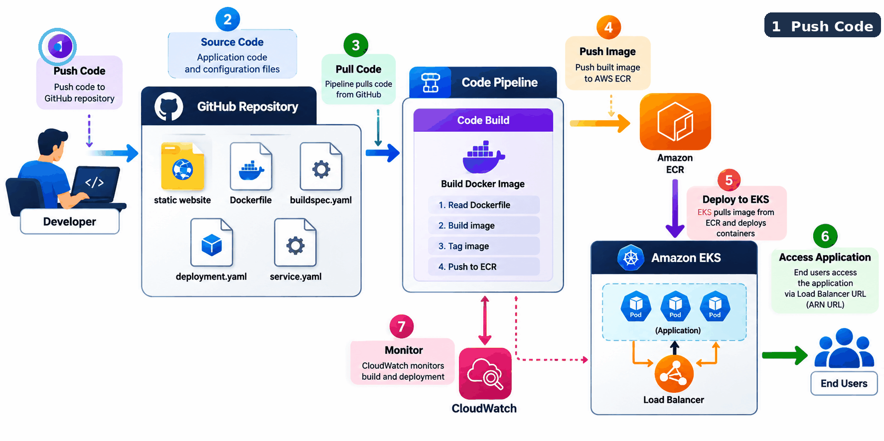

.png)

project demonstrates an end-to-end CI/CD pipeline for deploying a static web application
on AWS EKS (Elastic Kubernetes Service) using GitHub, AWS CodePipeline, CodeBuild,
Docker, ECR, and CloudWatch.
on AWS EKS (Elastic Kubernetes Service) using GitHub, AWS CodePipeline, CodeBuild,
Docker, ECR, and CloudWatch.
Project 1
Project 2
- This project demonstrates a complete DevOps lifecycle by deploying a static web application using Github, Docker, Jenkins, Kubernetes (EKS), Terraform, and AWS, with automated CI/CD and monitoring.
- The goal of the project is to show how modern DevOps tools work together to deliver continuous integration, continuous deployment, infrastructure as code, and observability in a productionlike environment.

Project 3
- This project demonstrates a complete end-to-end DevOps CI/CD pipeline for deploying a static web application using Docker, Jenkins, GitHub, Docker Hub, AWS EC2, and Monitoring (Uptime Kuma).
- The pipeline automatically builds, pushes, and deploys Docker images based on the Git branch (dev or main) and includes production-grade security and monitoring practices.

Project 4
- This project is a full-stack AI assistant built using FastAPI and Web Speech API.
- It allows users to interact with an AI system using voice input and receive intelligent spoken responses